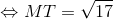

Distanța dintre două puncte în plan
Pentru început reamintim din capitolul anterior următoarele noțiuni:
Reper cartezian în plan
Cum aminteam și în primul capitol, reperul cartezian ortogonal în plan este un sistem de două drepte ortogonale care au aceeași origine  . Axa
. Axa  se numește axa absciselor, iar axa este axa ordonatelor.
se numește axa absciselor, iar axa este axa ordonatelor.
.jpg)
Planul în care se află reperul cartezian îl vom nota planul  .
.
Coordonate carteziene în plan
Observăm în imaginea de mai sus că punctul  aparține planului ; acest punct poate fi proiectat pe cele două axe , respectiv . Astfel, proiecția punctului pe axa o notăm , iar proiecția pe axa o notăm .
aparține planului ; acest punct poate fi proiectat pe cele două axe , respectiv . Astfel, proiecția punctului pe axa o notăm , iar proiecția pe axa o notăm .
Definiția G20: Coordonatele punctului T
Numărul  asociat punctului pe axa absciselor se numește abscisa punctului T, iar numărul real
asociat punctului pe axa absciselor se numește abscisa punctului T, iar numărul real  , asociat punctului pe axa ordonatelor se numește ordonata punctului T și notăm
, asociat punctului pe axa ordonatelor se numește ordonata punctului T și notăm  .
.
Aceste numere se numesc coordonatele punctului T.
Observație:
Coordonatele unui punct pot lua și valori negative. Astfel este necesar să vorbim despre cadranele reperului cartezian.
.jpg)
Observăm în imaginea de mai sus că avem patru cadrane, numerotate în sens invers acelor de ceasornic. Astfel punctele din primul cadran (roșu) vor avea atât abscisa cât și ordonata pozitive 0, y>0)">, punctele situate în cel de-al doilea cadran (galben) vor avea abscisa negativă și ordonata pozitivă 0)">, punctele aflate în cel de-al treilea cadran (albastru) vor avea ambele coordonate negative , iar punctele care se găsesc în cel de-al patrulea cadran (verde) vor avea abscisa pozitivă, iar ordonata negativă 0, y<0)">.
Având aceste noțiuni amintite, putem introduce următoarea noțiune:
Distanța dintre două puncte în plan
Fie două puncte din plan cărora le cunoaște coordonatele  și
și  .
.
Definiția G21: Lungimea unui segment
Distanța dintre cele două puncte, sau altfel spus lungimea segmentului ![[TS]](../../media/webbooks/616/5059/images/equations/thpf5bddqwpw1yefbil6dg==.gif) este:
este:
.
Observație:
Avem și câteva cazuri mai speciale :
- Dacă , atunci .
- Dacă , atunci .
- Dacă unul din puncte se află chiar în originea reperului cartezian, adică , atunci .
Aplicații
Pentru a vedea mai bine cum se aplică ultima observație de mai sus, profesorii noștri de matematică ți-au pregătit următoarele exerciții rezolvate complet:
- Să se calculeze distanța dintre cele două puncte în cazul , respectiv .
Rezolvare:
Observăm că . În acest caz, folosind formula dată de Observația 1, obținem că:
.
Să se calculeze distanța dintre cele două puncte în cazul  și .
și .
Rezolvare:
Cum ne situăm în cazul Observației 2 și, folosind formula de la această observație, rezultă că:
.
Să se calculeze distanța dintre două puncte și  , dacă avem , respectiv .
, dacă avem , respectiv .
Rezolvare:
Cum coordonatele punctului  sunt ambele egale cu
sunt ambele egale cu  , ne rezultă că punctul se identifică (este egal) cu originea sistemului de coordonate
, ne rezultă că punctul se identifică (este egal) cu originea sistemului de coordonate  și, prin urmare, conform Observației 3, avem că:
și, prin urmare, conform Observației 3, avem că:
.
Pentru a vedea cum se aplică calculul distanței dintre două puncte și în alte tipuri de probleme (atunci când nu ne încadrăm în cele 3 cazuri particulare date de ultima observației a secțiunii anterioare), te sfătuim să citești cu atenție rezolvarea următoarei probleme:
Avem trei puncte , , respectiv și dorim să reprezentăm grafic cele trei puncte, precum și să calculăm perimetrul triunghiului .
Rezolvare:
Mai întâi, reprezentăm grafic cele trei puncte date astfel:
.jpg)
După ce punctele au fost așezate în reperul cartezian ca în imaginea de mai sus, este nevoie pentru a calcula lungimea fiecărei laturi.
Folosim formula a Definiției G20: ( Lungimea unui segment ) și obținem:
.
.
.
Cunoscând distanțele dintre cele trei puncte date, putem calcula acum perimetrul triunghiului :
.